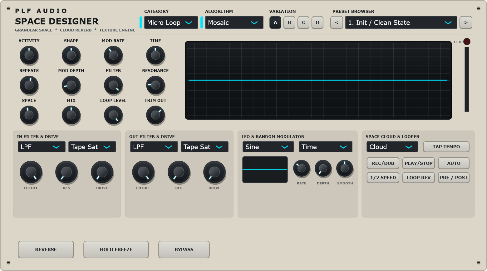

PLF Space Designer è il processore d'ambiente e texture engine definitivo creato da PLF Antigravity. Combina un motore granulare a 8 voci indipendenti, 21 algoritmi di riverbero modellati (Cloud, Sanctuary, Plate, Dirty Hall, Nonlin, ecc.), feedback fino allo 0.998 per code fluttuanti eterne, 12 pomelli fisici dedicati, doppio filtro analogico con 4 saturazioni e sistema Variation dinamico.

Confronta la traccia originale Bypass (Logue Dry) registrata da sintetizzatore hardware con l'ambiente tridimensionale ed infinito generato da PLF Space Designer (Wet - Preset Valhalla Cloud Eternal).
Ogni singolo modulo è stato programmato da zero in C++20 con JUCE 8 per garantire massima stabilità e zero denormali.
Nessun pulsante "Shift" o parametri nascosti. Activity, Shape, Mod Rate, Time, Repeats, Mod Depth, Filter, Resonance, Space, Mix, Loop Level e Trim Out sempre a portata di mano.
Feedback scalabile fino a 0.998 con smorzamento HF progressivo e matrice olografica multi-tap. Dai riverberi intimi di stanza a cattedrali cosmiche eterne.
Quattro variazioni timbriche istantanee: A (Foundation), B (Shimmer e double-time), C (Deep sub e 50% reverse grains), D (Polyrhythmic modular glitch).
Due stadi completi di filtraggio in ingresso e in uscita (LPF, HPF, BPF) con 4 modelli di distorsione armonica (Tape, Tube, Diode, Warm Germanium).
Generatore di forme d'onda (Sine, Triangle, Saw, Square, Random Smooth) visibili in tempo reale sull'oscilloscopio e assegnabili a scelta su qualsiasi pomello.
Schermo olografico per il monitoraggio dei grani sonori, Peak Meter reattivo e indicatore LED rosso CLIP di protezione sovraccarico.
Selezionabili istantaneamente dal menu a discesa nel modulo Space Cloud:
Diffusione ultra-densa, attacco morbido e code fluttuanti eterne.
Grande risonanza da auditorium con risposta bilanciata sui medio-bassi.
Riflessioni vivide ed ariose con decadimento delle altissime frequenze.
Risposta immediata, densa e brillante in puro stile piastra vintage.
Spazio studio raccolto, riflessioni precoci calde e dinamiche.
Camera d'eco risonante con timbrica organica e corpo denso.
Ritardi modulati asimmetricamente con fluttuazione spaziale continua.
Detuning corale a 4 fasi stile Lexicon anni '80.
Decadimento corto e controllato per dare tridimensionalità senza impastare.
Architettura sacra colossale con decadimento monumentale.
Concert hall con saturazione analogica a nastro nel circuito di feedback.
Piastra metallica spinta in saturazione armonica calda.
Massima diffusione setosa senza risonanze o flutter.
Stanza trattata in legno naturale con assorbimento progressivo.
Deriva fluttuante morbida priva di discontinuità di pitch.
Inviluppo non-lineare gated anni '80 a decadimento invertito.
Cross-coupling instabile per texture sperimentali e glitch.
Ambiente smisurato con derive di fase e modulazioni imprevedibili.
Campo sonoro modulare continuo per ambient ed elettronica d'avanguardia.
Generatore di ottava superiore armonico (+12st) nel feedback.
Inviluppo dinamico con rigonfiamento graduale dietro alle note in ingresso.
Suddivisi in categorie cromatiche e memorizzati con persistenza immediata all'apertura del plugin:
Scarica gratuitamente anche gli altri strumenti creati da PLF Antigravity:
Granular Space * Cloud Reverb * Texture Engine
21 Algoritmi di riverbero, 10 algoritmi granulari, 12 pomelli dedicati, LFO display, 23 preset e riverbero infinito.
Scarica Space Designer Manuale PDFAnalog Console Channel Strip & Bus Processor
EQ a 4 bande dinamico SSL 4000 E/G, G-Bus Glue Compressor con parallelo, Transient Designer, Exciter armonico e Imager multibanda.
Scarica PLF Channel Manuale PDFAnalog Reel-to-Reel Tape Machine
Modellazione di nastri magnetici a 15 e 30 IPS con wow & flutter, saturazione di testina e compressione analogica.
| Caratteristica | Dettaglio |
|---|---|
| Formato Plugin | VST3 (64-bit) compatibile con specifica VST3.7 |
| Sistemi Operativi | Windows 10, Windows 11 (64-bit) |
| DAW Testate | Ableton Live 11/12, FL Studio 21+, Reaper 7+, Cubase 13+, Studio One 6+, Bitwig Studio |
| Frequenze di Campionamento | Supporta nativamente 44.1 kHz, 48 kHz, 88.2 kHz, 96 kHz e 192 kHz |
| Overhead CPU | Ottimizzato con istruzioni AVX2 SIMD per bassissimo impatto sulla CPU |
| Licenza | Freeware / Full Version — Uso libero per produzioni personali e commerciali |